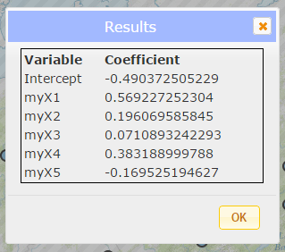

This application uses Ordinary Least Squares to find relationships between variables in your dataset. You can also use this information to make predictions about other data points with the same schema. For more information about this tool, please click here.
Ordinary Least Squares Analysis Tool
Step 1
Click the "Choose File" button and navigate to a csv file that contains at the minimum a latitude or Y column, a longitude or X column, and dependant variable column, and data variable columns.
A popup will appear. Choose the columns for the latitude, longitude, and dependant variables. Hold down shift or control and to select multiple data columns. Click "Ok".
Your points should be mapped. To view the value for each point, click on it.
Step 2
Click "Calculate".
Analysis Results
After a short time, a popup should appear with your results. Click "OK" to close the popup.
The map should display your layer with a new color. You can click each point to view more information about the analysis.
You can view the results popup again by clicking the "Basic Results" button, or view more detailed results with the "Advanced Results" button. For diagnostic information on the analysis process, click "Result Statistics". More information is available about the tool that calculates these results here.
Step 3
Optionally, you can upload another data file with the same data columns to use the results of your previous analysis to find predicted values for your dependant variable. Click the "Choose File" button and navigate to a csv file that contains at the minimum a latitude or Y column, a longitude or X column, and the same data columns as your previous analysis.

Prediction Results
The map will show your new data points in yellow. Click on a point to view the predicted value. You can also click the "Download" button to download a new CSV containing your predicted values.
You can clear the map to begin with a new dataset by clicking the "Clear" button.
Basemap picker
Click the basemap button to toggle between the topographic basemap and a satellite imagery basemap.